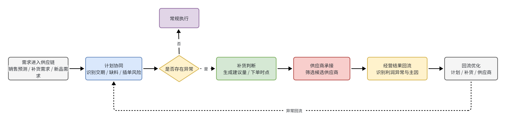
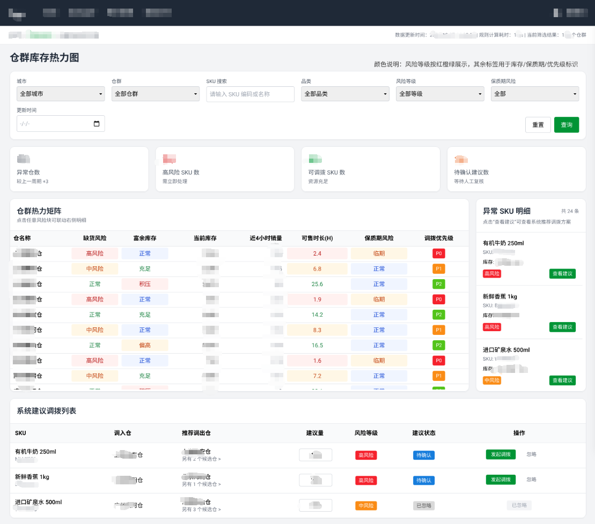
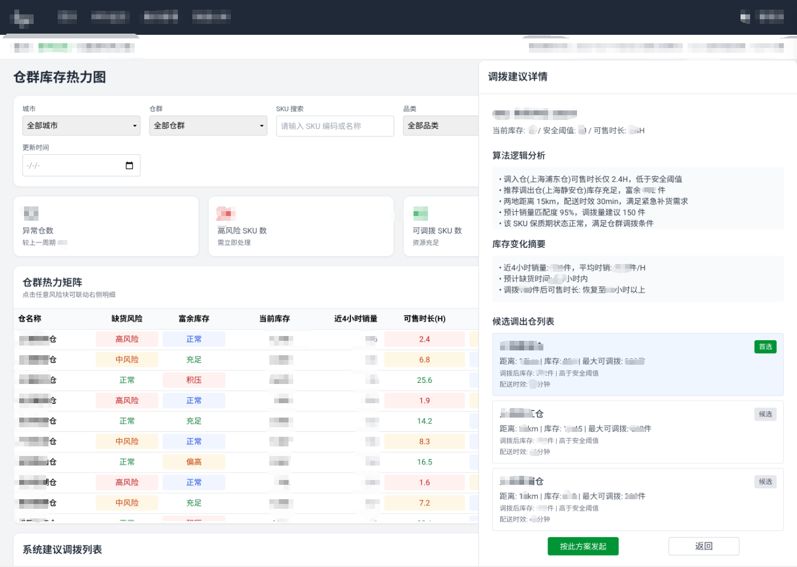
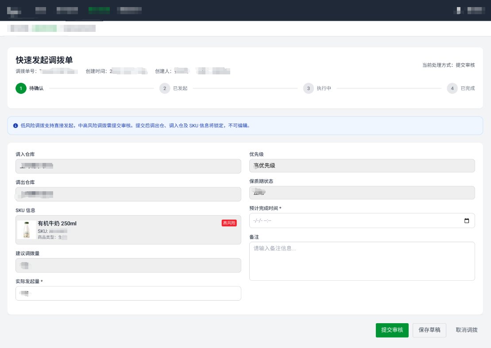
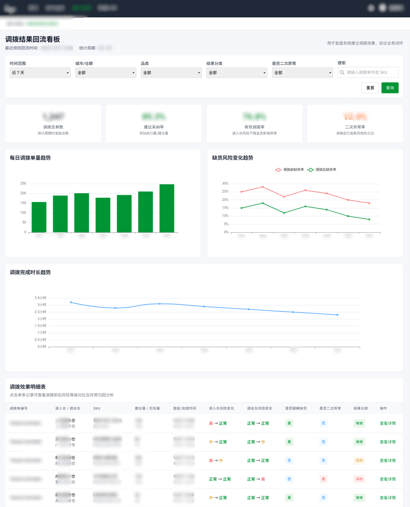

业务背景 / 问题背景
业务背景
在“区域处理中心 + 前置仓”履约模式下，仓群内库存协同直接影响缺货补位与履约稳定性，跨仓调拨是保障履约连续性的关键手段。
问题背景
原有链路更依赖人工判断，存在库存视角偏单仓、调拨标准不统一、执行后难复盘的问题，影响处理效率与协同一致性。
CASE STUDY · 02
在“区域处理中心 + 前置仓”履约模式下，围绕风险识别、建议生成、快速发起与结果回流，搭建标准化的仓群调拨协同闭环，并在 3 个试点仓群、约 600 个白名单 SKU 中完成验证。
效率提升
-28%
调拨发起时长
建议承接
64%
系统建议采纳率
履约缓解
+11%
仓群缺货缓解率
录入优化
-3.2%
快速发起录入错误率
BACKGROUND
业务背景 / 问题背景
业务背景
在“区域处理中心 + 前置仓”履约模式下，仓群内库存协同直接影响缺货补位与履约稳定性，跨仓调拨是保障履约连续性的关键手段。
问题背景
原有链路更依赖人工判断，存在库存视角偏单仓、调拨标准不统一、执行后难复盘的问题，影响处理效率与协同一致性。
迭代目标
围绕“看清风险、承接建议、减少重复操作、沉淀回流结果”四个方向，补齐仓群调拨的标准化闭环。
试点范围
本期以 3 个试点仓群、约 600 个白名单 SKU 为验证范围，用于观察调拨效率、建议承接与缺货缓解效果。
KEY ISSUES
风险识别滞后
运营需要跨页面查看库存与销量，难以在仓群视角下快速识别异常仓与可支援库存。
影响：问题发现慢，调拨前置判断成本高。
调拨判断依赖经验
调入仓、调出仓与建议量主要依赖人工判断，缺少统一规则支撑，处理口径不一致。
影响：建议承接不稳定，协同效率受人而异。
发起链路冗长
即使调拨方案已基本明确，正式发起环节仍需重复录入关键信息，影响执行效率。
影响：从判断到执行的转化路径过长。
执行结果难复盘
调拨完成后缺少系统化回流与分类判断，难以验证规则有效性，也不利于后续优化。
影响：规则迭代缺少稳定的反馈依据。
SOLUTION OVERVIEW
01
风险识别层
通过仓群热力图统一观察缺货风险、富余库存与可调拨 SKU，先把问题看清楚。
02
建议承接层
通过详情抽屉解释调拨建议的计算逻辑与优先顺序，提升建议的可理解性与可承接性。
03
执行发起层
通过快速发起单据减少重复录入与状态跳转，让判断结果更快转化为真实执行动作。
04
结果回流层
通过结果回流看板观察调拨执行成效与趋势，形成规则验证与后续优化的反馈依据。
KEY PAGES
业务流程图

从原有“人工查数—人工判断—手动发起—人工跟踪”的离散处理方式，升级为“风险识别—建议生成—快速发起—结果回流”的标准化履约协同闭环。该流程图用于概览本次迭代的核心链路，也是后续页面设计的结构基础。以下页面围绕这一闭环展开，分别承接风险识别、建议解释、正式发起与结果回流。
页面解决的是风险识别分散、异常仓与可支援库存难以同屏判断的问题，让运营能够快速从仓群视角看清当前调拨压力。
在闭环中，它承担的是风险识别入口，把后续建议生成建立在更统一的全局观察基础上。
仓群库存热力图

调拨建议详情抽屉

页面解决的是“系统建议为什么这么给”的理解问题，把调入仓、调出仓、建议量与排序逻辑清楚展示出来。
在闭环中，它承担建议承接作用，让规则判断从经验依赖转成可解释、可采纳的系统依据。
页面解决的是从调拨判断到正式发起之间链路过长的问题，把核心信息收敛到统一入口，减少重复录入和多次跳转。
在闭环中，它承担执行发起作用，让前面的风险识别和建议生成能够更快转化成真实动作。
快速发起调拨单

调拨结果回流看板

页面解决的是执行结果难复盘的问题，把结果指标、趋势变化与关键异常统一带回管理视角，避免调拨动作做完后链路再次断开。
在闭环中，它承担结果回流作用，让规则优化不再依赖零散经验，而能基于系统化反馈持续迭代。
我主要参与了仓群调拨场景的问题梳理、热力图页面设计、调拨建议规则补充、快速发起流程优化、结果回流指标口径整理，以及评审与落地过程中的方案对齐工作。
这个项目让我更系统地理解了履约中后台产品如何把“问题识别—规则建议—执行发起—结果回流”收敛为可落地方案，也让我在规则设计、流程设计与页面承接之间建立了更清晰的产品判断。
作品及展示图片均已脱敏，企业内部敏感信息已做打码处理。